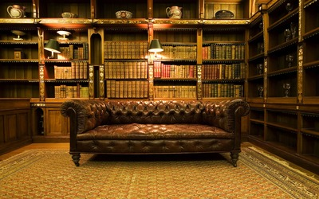
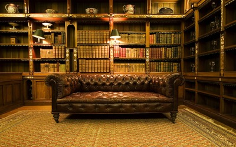
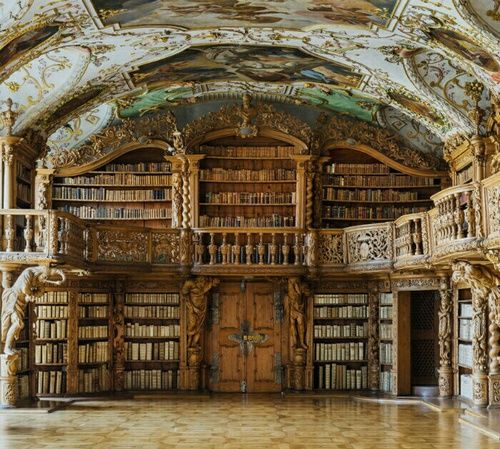

TapRoom
 Come Visit us and enjoy some of our GABF medal winning beers alongside with our rotating seasonal beers! We also have a merch shop for you hop heads to pick up all of your favorite beer schwag from hats and shirts to glassware and bottle openers.
- Mon-Thurs 4p-10p
- Fri-Sat 10a-2a
- Sun 10a-10p